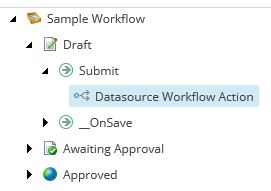
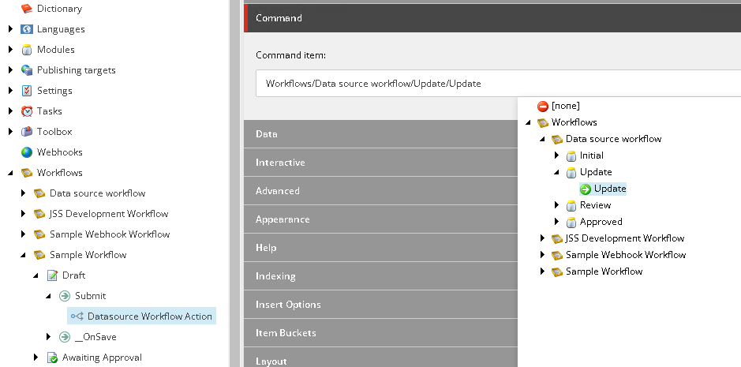

Assign a data source workflow action in SXA
How to add data source workflow actions to your pages workflows.
In Sitecore, you can implement any number of different workflows. Workflow states can correspond to the stages that an item goes through before it is published on your website, such as creation, review, and approval. This gives you control over the content approval and publishing process.
SXA comes with a library of predefined renderings that pull data from data source items. This means that the rendered content is not bound to the page it appears on. Instead, the content is stored in the data source items. We recommend that you do not modify default SXA items. You cannot apply a workflow on the __standard values template of those data sources.
To enable the versioning of data sources, you can add data source workflow actions to your page workflows. These actions mean that when a page moves through the workflow, your data sources follow in their own workflow. For example, when you move the page to the next workflow state, you might also want to change the state of the components and their data sources.
You must manually assign the workflow.
To assign a data source workflow action to an item in SXA:
In the Content Editor, navigate to the workflow actions: sitecore/System/Workflows.
Right-click the workflow action that you want to add the data source workflow action to, click Insert, and click Datasource Workflow Action.
Enter a name, and click OK.
Fill in the following fields:
Command item - commands move content items from one workflow state to another. When the command is executed, the item is moved to the workflow state that is defined in the command item. You can select any available command from the tree. For example, when a page is submitted, you want the data sources to move to the Update state.
Execute on items that pass this rule or any item if empty - to add a global condition for the data source workflow action, navigate to the Interactive section, and click Edit rule. For example, you might only apply the data source workflow action when the page is of a specific template. Or, for example, only apply the data source workflow action on Tuesdays.
Execute on data source items that pass this rule or all data sources if empty - to add a condition for the data source workflow action, navigate to the Interactive section, and click Edit rule. For example, only apply the workflow action for data sources of a specific component.
Now when you submit the page to the next workflow state, depending on your settings, the data source workflow state is updated as well. For example, if you use the sample workflow for your pages and added a data source workflow action to the Submit state, the data source workflow state changes accordingly.
If you add the data source workflow action (Update) to the page workflow command (Submit) and submit the page, the state of the data source item changes from Initial to Update.